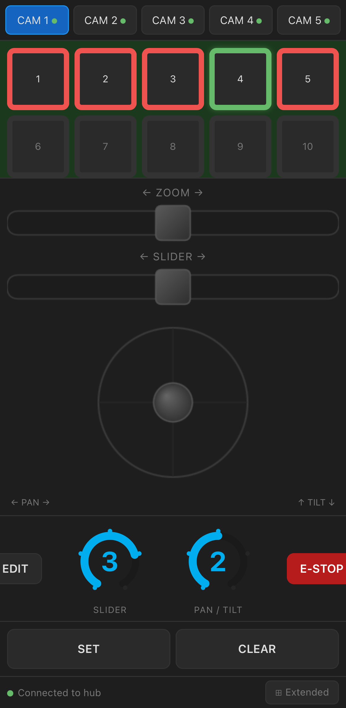
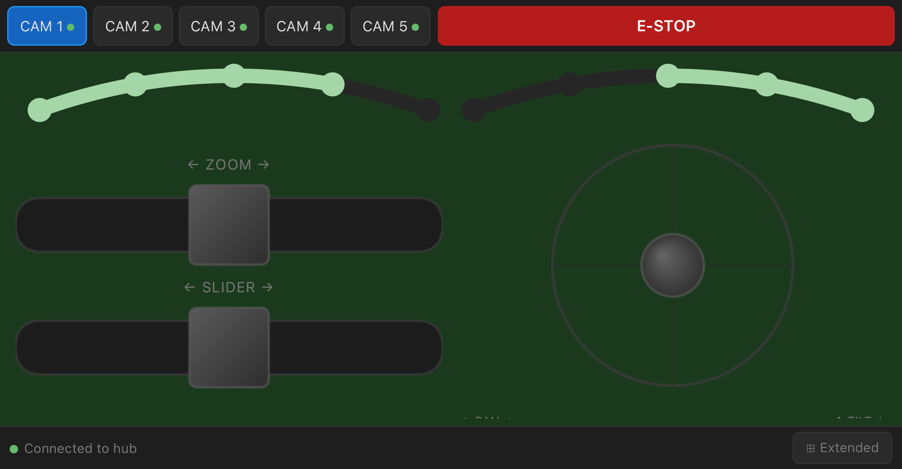
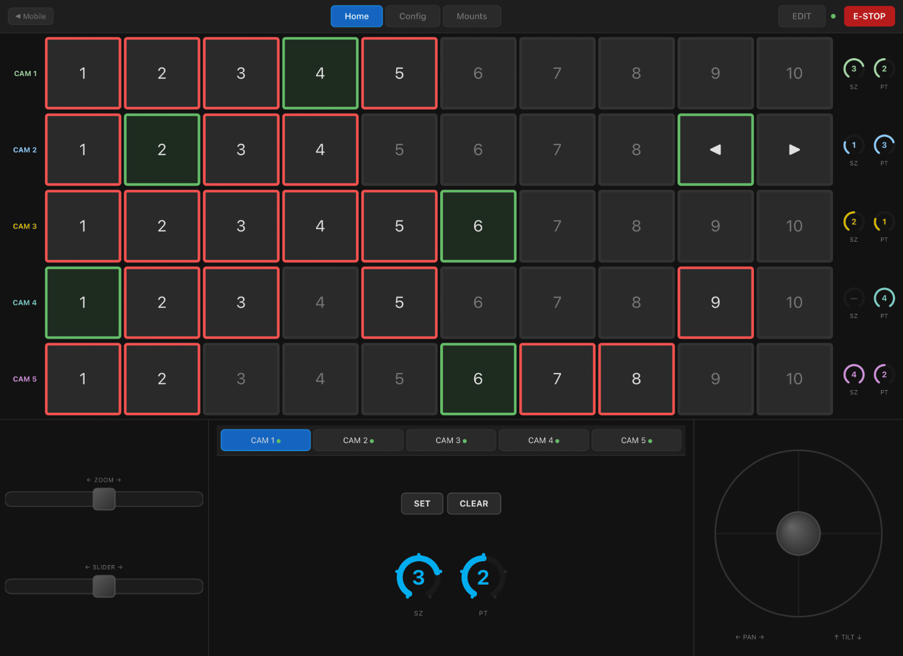

Web app
Full control from any phone on the hub's WiFi — nothing to install.
The hub serves a web app straight from its own flash. Any phone, tablet or laptop that joins the hub's WiFi can open it in a browser and control the rig — no app store, no install, no PC.
Getting on
- Join the hub's WiFi network —
PTS-Hubuntil you rename it, otherwisePTS-and the name you gave it. - Open a browser to
http://192.168.4.1. - The web app loads and connects to the hub over WebSocket automatically.

What you can do
- Recall and store positions — the full ten slots per camera (Storing & recalling shots).
- Jog pan, tilt, slider and zoom.
- Set speed presets per camera.
- Look-at — pick a subject and run ◀ / ▶ moves (Look-at tracking).
- Manage pairing — the Mounts page shows the hub's live pairing table, forgets a retired mount, and resolves same-number conflicts (Replace / Ignore) — so a hub plus a phone is a complete rig (Pairing & identity).
- Control the Blackmagic cameras — autofocus, ISO, white balance, recording, and the full colour-correction surface, the same as the PC app's Camera Control (below).
The layout adapts to portrait and landscape, so it's usable held either way.

The extended view
Tap Extended for a wall-style layout that shows every camera's ten slots and speed presets at once, with zoom, slider and the pan/tilt joystick along the bottom. It works on a phone, but comes into its own on a tablet.

The extended view also carries the per-camera hardware settings — the invert flags, look-at mode, and the slider angle for a rail that climbs. See Configuration for what the angle does and why it matters.
Camera control
Blackmagic camera control over each mount's Bluetooth link — the same panels as the PC app's Camera Control, sending the same commands. Open it with ◎ Camera in the bottom bar of the portrait, landscape and GC screens, or the Camera tab of the extended view.
- One row per camera — Auto Focus, ISO − / +, WB − / + and Record, with the camera's link state spelled out: camera ready, camera off, no camera paired, no camera support or mount offline. What each one asks of you is in Blackmagic camera control.
- Advanced… — the full surface for one camera: ISO, Shutter, Balance, Auto WB; Iris, Zoom and Focus; the Lift, Gamma and Gain wheels with Contrast, Saturation, Hue, Pivot, Lum Mix and Tint. On a phone the wheels show one at a time — pick Lift, Gamma or Gain above them; each has a ↺ to put it back to neutral.
ISO, WB and the Record button show what the camera reports, never what was sent, so a number changes only once the camera confirms it. The colour controls only take effect while the camera records RAW — see Record in RAW — and the camera never reports them back, so they show what this device last sent.
Focus buttons
Switch on Focus buttons on the main screen at the foot of the camera panel and a red crosshair appears on the main screens: one tap is one Auto Focus on that camera. In portrait and landscape it sits between the two speed controls and acts on the selected camera; on the GC screen it follows position 10, and in the extended view each camera row has its own, as on the PC app's grid. It turns grey when that camera cannot take the command, and flashes green to show the command was sent. The setting is kept per device — off unless you want it, since without Blackmagic cameras it could never do anything.
Game controller
Pair a Bluetooth game controller — PlayStation, Xbox or similar — to your phone or tablet and it drives the selected camera directly, for smooth one-handed moves:
- Left stick — slider left / right.
- Right stick — pan and tilt.
- Triggers — zoom: right trigger zooms in, left trigger zooms out, and squeezing both cancels out.
How far you push a stick sets the speed, exactly like the on-screen joystick, and letting go stops the mount. Switch cameras with the on-screen tabs — the controller always follows whichever is selected — and a brief on-screen note confirms when a controller connects.
GC screen. On the landscape view, tap GC (bottom-left) for a layout built for phone-in-controller mounts, where the pad holds the phone. It drops the on-screen joystick and faders — the controller handles those — and leaves just what you still reach for on the touchscreen: the camera tabs, the position grid, the two speed dials, Set / Clear and E-STOP. Tap GC again to bring the joystick back.
Running the rig without any computer at all? That's the Hub touchscreen.